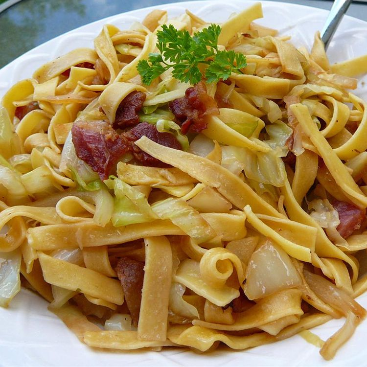

Halushki

Dish Description
Halushki is a traditional Polish dish. It is made up of bacon, fried cabbage and egg noodles.
It is a hearty meal and is sure to be a family favorite!
Ingridients
- 1 pound bacon
- 1 onion, diced
- 1 16 ounce package of egg noodles
- 1 head cabbage, sliced
- salt and pepper to taste
Directions
- Snip bacon into small pieces with a scissors and cook in a large skillet over
medium heat until crisp, stirring often, about 10 minutes. Cook and stir onion
with bacon until translucent, about 5 more minutes; set bacon and onion aside,
leaving drippings in the skillet.
- Bring a large pot of lightly salted water to a boil. Cook egg noodles in the
boiling water, stirring occasionally until cooked through but firm to the bite,
about 5 minutes. Drain.
- Transfer bacon and onion mixture with drippings into the pot used to cook the
noodles and cook and stir cabbage until coated with drippings. Cover pot and
cook until cabbage is tender, 10 to 12 minutes, stirring occasionally. Gently
stir in noodles and season to taste with salt and black pepper.